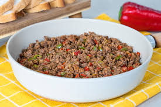

Home
Karni Yarik
Gerekli Malzemeler
- 6 adet orta boy patlican
- 3 yemek kasigi zeytin yagi
- 1 adet buyuk boy kuru sogan
- 2 adet yesil biber
- 350 gram kiyma
- 2 dis sarimsak
- 1 cay kasigi tuz
- 1 tatli kasigi domates salcasi
Karni yarik tarifi
-
Karnıyarık için bol suda yıkadığınız patlıcanları, pijamalı şekilde soyun ve tuzlu suda bekletin. 3 yemek kaşığı zeytinyağını bir tavada kızdırın. Yemeklik doğradığınız 1 adet soğanı da üzerine ekleyip pembeleşene kadar kavurun. 2 adet doğranmış yeşil biberi ilave edip kavurmaya devam edin.
-
350 gram orta yağlı kıymayı da ekleyin ve kavrulmakta olan soğanlarla birlikte renk alıp, suyunu çekene kadar pişirin.

-
Aralarda karıştırıp pişirme işlemine devam ederek sırasıyla; 2 diş sarımsak, yarım tatlı kaşığı domates salçası, yarım tatlı kaşığı biber salçası, 1'er çay kaşığı tuz ve karabiber ekleyin.
-
2 adet küp doğranmış domatesi ekleyin, 5 dakika kadar pişirdikten sonra ocağın altını kısın ve bir avuç doğranmış maydanozu ekleyip son kez karıştırarak ocaktan alın.
-
Orta kısımlarından patlıcanları yarın.Hazırladığınız iç harçtan bol bol ekleyin.Patlıcanların üzerine birer cherry domates ve biber dilimleri ekleyin.Karnıyarıkları önceden ısıtılmış 170 derece fırında 20-25 dakika kadar pişirdikten sonra, sıcak olarak, dilerseniz tereyağlı pirinç pilavı eşliğinde servis edin, afiyet olsun!